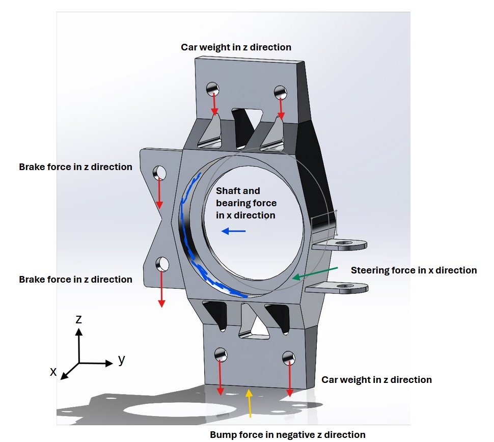
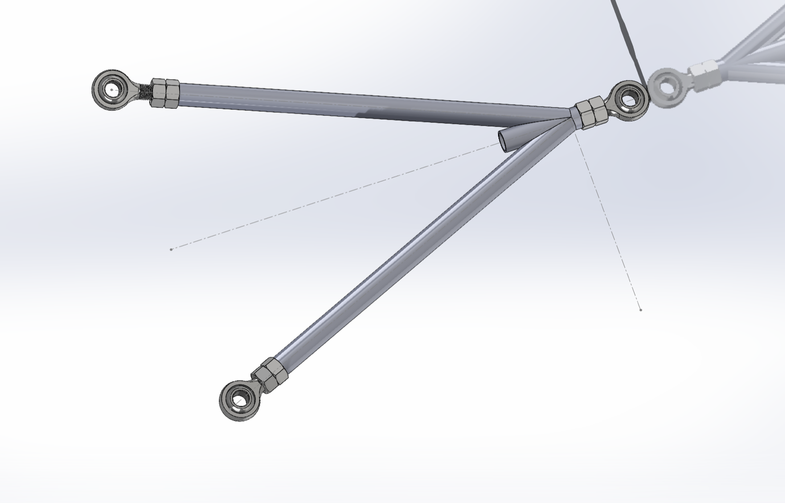
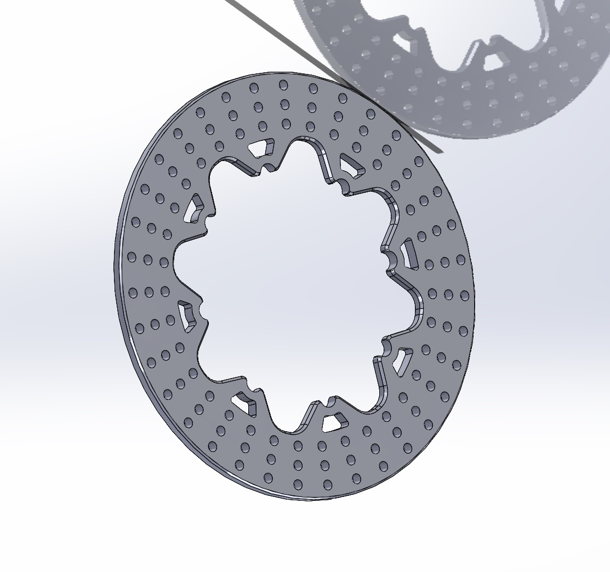
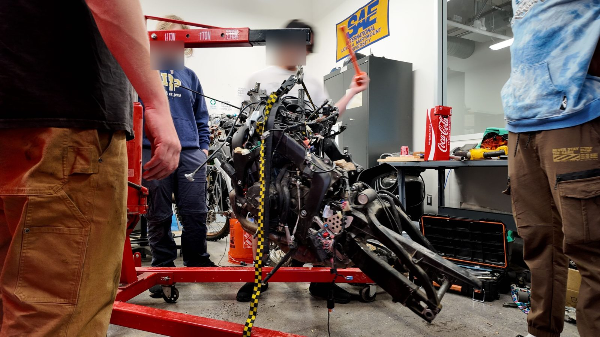
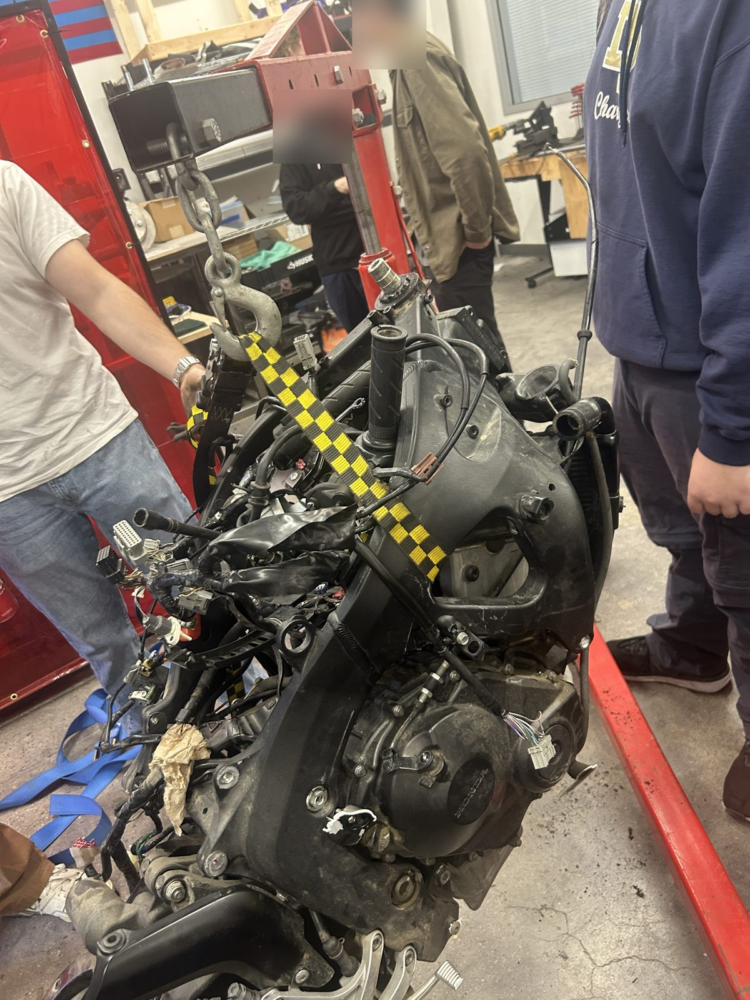
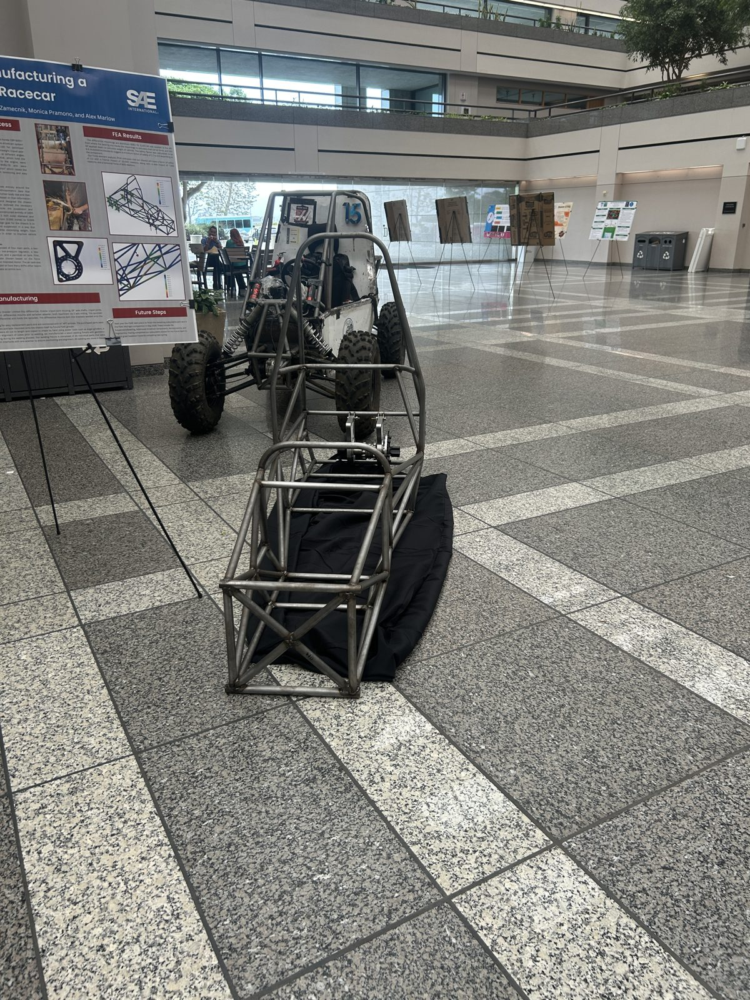

Lion Motorsport FSAE
Former suspension team member
The Problem
Responsible for ensuring a strong, reliable connection between the chassis and suspension system on LMU's first FSAE car. The main challenge was achieving structural integrity and precise alignment under dynamic loads while coordinating with other sub-teams to meet performance and safety standards.
Contribution
Designed multiple parts in SolidWorks and validated load responses up to 616 lbs (FSAE regulations allow cars up to 300 kg).




In the team shop
Working on the car with the Lion Motorsport team: pulling the engine on a hoist, and the tube frame on display at a showcase.



The Result
I left the team before the car was finished, so I did not see these parts through to a running car. What I did complete: SolidWorks models of the upright, suspension links, and brake rotor, plus FEA on the upright under braking, steering, and bump loads up to 616 lbs.
What I would do differently
I would get involved in the overall suspension design earlier instead of focusing only on my own parts. Several of our ideas did not work because of knowledge gaps and miscommunication between my teammate and me.
The lesson I took away: understand the whole system before designing one piece of it, and talk through design choices with teammates early.